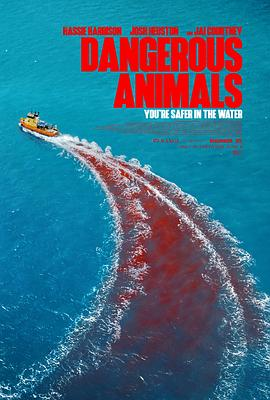

6.2
危险动物
Dangerous Animals
2025
澳大利亚
评分 6.2
导演:
Sean Byrne（肖恩 伯恩／澳大利亚）
演员:
哈西·哈里森 / 杰·科特尼 / 约什·赫斯顿 / 艾拉·纽顿 / 利亚姆·格林基 / 罗伯·卡尔顿 / 阿丽·巴索卡
类型:
恐怖,惊悚
剧情简介
冲浪女王泽菲尔（哈西·哈里森 饰）习惯于在海浪中寻找自由，但她的生活在一次浪潮之后彻底改变。她被一个旅程迷你艇拦截，船主塔克（杰·科特尼 饰）外表风趣却隐藏变态，他将泽菲尔绑上自己的船舱，将其转变为“猎物”，并准备将她投入鲨鱼群中，以完成一场仪式性的屠杀。在金黄海岸的日落之后，机舱中铁链响起、冲浪板搁浅、海面反射着法国电影节的闪光灯。泽菲尔意识到，此刻逃离不只是为了生存，更为了证明：真正危险的不是鲨鱼，而是人。与此同时，她的朋友们察觉她的失踪，开始在监控录像、一张冲浪照片、一个被拖走的冲浪车之间拼凑线索。导演用真实鲨鱼影像和窒息的甲板场景，营造出水下与船上双重恐惧：当海水漆黑一片、鲨鱼鳍掠过，摄影机却转向塔克的微笑；当泽菲尔抽搐着锁链，她的呼吸在空气中凝固。影片将“狩猎”与“被狩猎”反转，让观众在海洋风光中体会深沉的压迫感。如果你对“人在海底战斗”“人变成猎物”“极限生存＋心理惊悚”这些题材感兴趣，这部电影会让你在蔚蓝与深黑之间感受到自由与恐惧的边界。